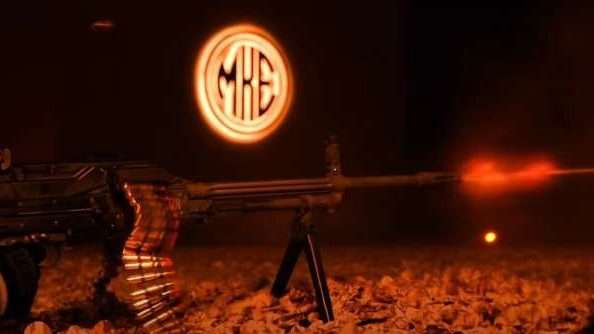
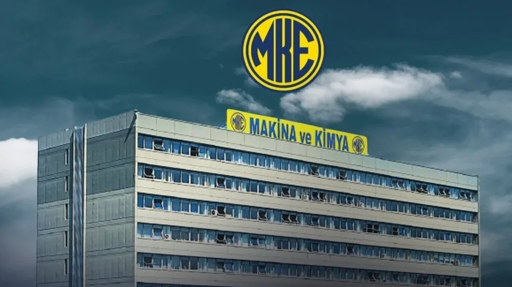
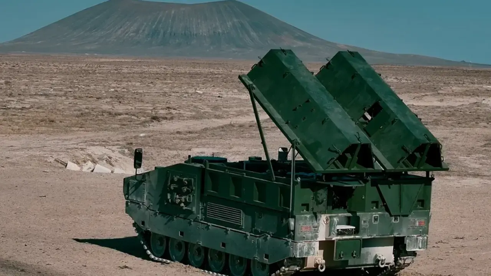

Sanayi Kimliği
Kırıkkale denildiğinde akla gelen en önemli unsurlardan biri savunma sanayidir. MKE bu kimliğin oluşmasında büyük rol oynamıştır.
Kırıkkale'nin sanayi kimliğini oluşturan önemli değerlerden biridir
MKE Resmî SitesiMakine ve Kimya Endüstrisi (MKE), Kırıkkale'nin sanayi şehri olarak tanınmasında önemli bir yere sahiptir. Şehrin ekonomik, sosyal ve kültürel gelişiminde etkili olmuş; Kırıkkale'nin savunma sanayisiyle özdeşleşmesine katkı sağlamıştır.

Kırıkkale denildiğinde akla gelen en önemli unsurlardan biri savunma sanayidir. MKE bu kimliğin oluşmasında büyük rol oynamıştır.

Şehirdeki üretim anlayışı, iş gücü kültürü ve sanayi geleneği üzerinde önemli bir etkiye sahiptir.

MKE, sadece bir sanayi kuruluşu değil; aynı zamanda Kırıkkale'nin tarihsel gelişiminin ve şehir hafızasının önemli bir parçasıdır.
Kültürel miras yalnızca tarihi yapılarla sınırlı değildir. Bir şehrin üretim geçmişi, sanayi kültürü ve toplumsal hafızası da o şehrin mirasının önemli parçalarıdır. Bu nedenle MKE, Kırıkkale'nin şehir kimliğini anlatmak için güçlü bir örnek olarak görülmektedir.